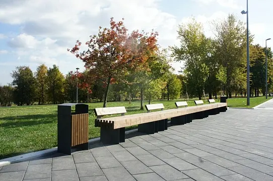

Озвучивание парков
Парки и лесопарковые зоны, находящиеся в черте города или за его пределами (например, на турбазах) часто требуется озвучить. Особенность этих территорий – сложный ландшафт и обилие естественных препятствий для звуковых волн. Это предъявляет определенные технические требования к схеме озвучивания. Однако, если все сделать грамотно, то отдыхающие в парке смогут наслаждаться музыкальным сопровождением во время прогулок.
Выбрать формат